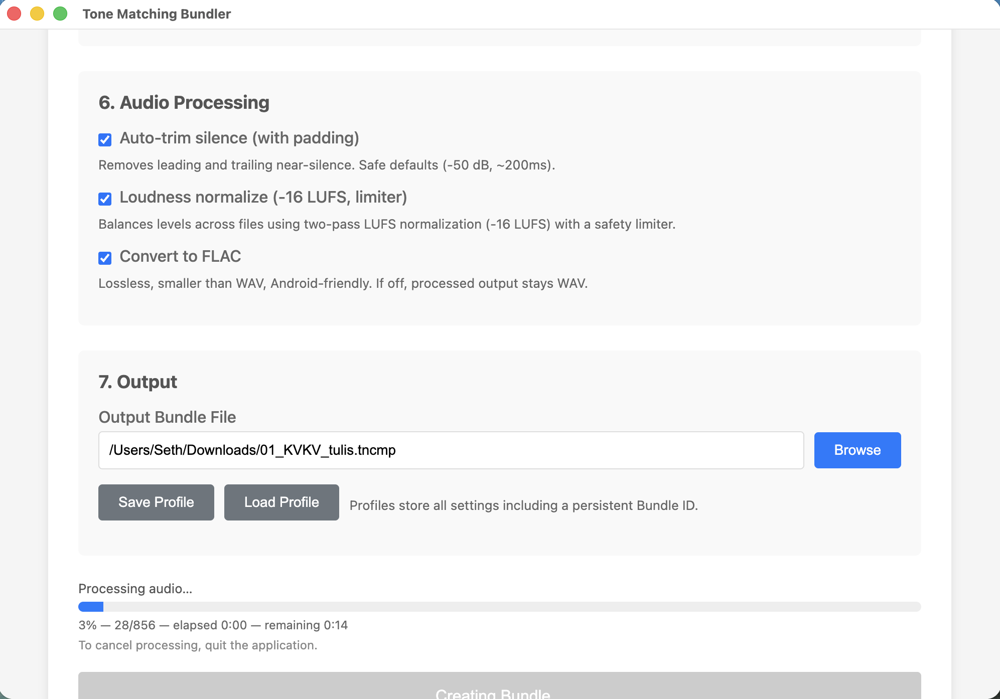
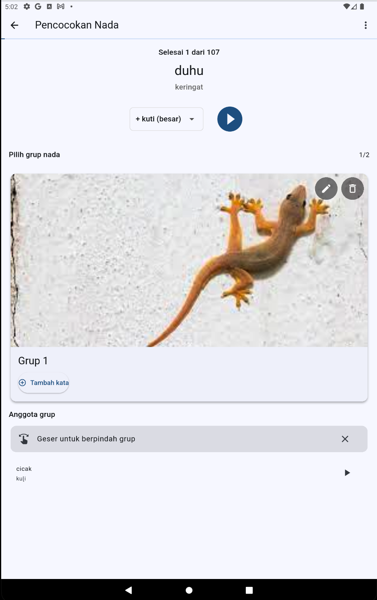
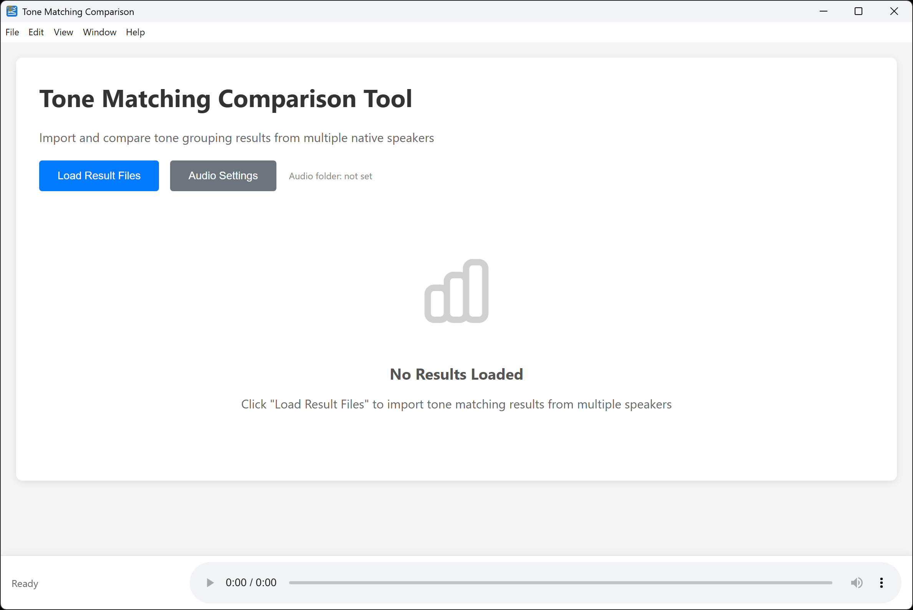

Before You Begin
This guide assumes you have:
- A Dekereke phonology database with your language data
- Audio recordings (WAV files) for the words in your database
- A computer (Windows or Mac) for the researcher tasks
- Optionally: An Android phone or tablet for native speakers
Don't Have Dekereke?
While Tone Matching Suite is designed to work with Dekereke databases, you can learn more about Dekereke at https://casali.canil.ca/. Dekereke is a specialized phonology database tool used by many field linguists for language documentation.
Quick Start: Three Steps
1
Prepare Your Data Bundle (Researcher)
Time needed: 5-15 minutes
Tool: Tone Matching Bundler (Windows or Mac)
What You'll Do:
- Download and install the Bundler app from the Downloads page
- Launch the app - it will open in a new window
- Select your XML file
- Click "Browse" next to "XML File"
- Navigate to your Dekereke export file
- The app will read your file and show how many records it found
- Select your audio folder
- Click "Browse" next to "Audio Folder"
- Navigate to the folder with your WAV files
- Make sure your audio file names match what's in your XML
- Configure settings
- Choose which fields to display (e.g., phonetic form, gloss)
- Decide if you want speakers to type their own spelling
- Create the bundle
- Click "Browse" next to output file
- Choose where to save (e.g., "nouns_bundle.tncmp")
- Click "Create Bundle"
- Wait for processing to complete

Tips for Bundler App
- Start small: For your first bundle, try 20-50 words from one grammatical category
- Check file names: If you get "missing audio" warnings, check that your audio files match the names in your XML
- Organize by pattern: Create separate bundles for different syllable patterns (CVC, CVCV, etc.)
2
Classify the Tones (Native Speaker)
Time needed: 30-90 minutes (depending on number of words)
Tool: Tone Matching Mobile (Android) OR Desktop (Windows/Mac)
Choose Your Platform:
Option A: Mobile App (Recommended for Native Speakers)
Best for: Native speakers working independently, field work, languages where speakers may not be comfortable with computers
- Install the app
- Download the APK from Downloads page
- Transfer to Android device via USB or file sharing
- Install (you may need to enable "Unknown Sources")
- Transfer the bundle
- Copy the .tncmp file to your device
- Remember where you saved it
- Load and start
- Open the app
- Tap "Load Bundle"
- Select your .tncmp file
- Wait for it to load
- Tap "Start Tone Matching"
Option B: Desktop App
Best for: Researchers doing the classification themselves, speakers comfortable with computers
- Install and launch Desktop Matching from Downloads page
- Load the bundle by clicking "Open Bundle" and selecting your .tncmp file
- Start matching when prompted
The Matching Process:
- First word:
- Listen to the audio
- Draw a simple picture representing the tone melody
- Take a photo (or upload an image on desktop)
- This creates your first tone group
- Each following word:
- Listen to the audio
- Look at your existing tone groups
- Listen to example words in each group
- Does it sound like one of these groups?
- Yes: Tap that group to add the word
- No: Create a new group with a new drawing
- Continue until all words are classified
- Export your results when finished

Tips for Tone Matching
- Trust your ears: Don't overthink it - does it sound the same?
- Listen multiple times: Replay audio as often as needed
- Compare carefully: Play words in existing groups before creating new ones
- Take breaks: Your ears get tired - take a break every 30-60 minutes
- Make drawings distinctive: They don't need to be artistic, just different from each other
Drawing Ideas for Tone Patterns
- Rising tone: ↗️ arrow pointing up
- Falling tone: ↘️ arrow pointing down
- High level: __‾‾__ straight line at top
- Low level: __ __ straight line at bottom
- Complex contours: ∿∿ wavy lines
- Or use simple symbols: ⭐ 🌙 ☀️ 🌊 ⛰️
3
Review the Results (Researcher)
Time needed: 15-30 minutes
Tool: Tone Matching Comparison (Windows or Mac)
If You Have One Speaker:
- Review the exported results file
- Check that the tone groupings make sense
- Update your Dekereke database with the tone group assignments
If You Have Multiple Speakers:
- Install and launch the Comparison app from Downloads page
- Load all result files from different speakers
- Review statistics:
- How many words have full agreement?
- How many have disagreements?
- What's the overall agreement percentage?
- Examine disagreements:
- Which words did speakers classify differently?
- Do you need to discuss these with speakers?
- Should some tone groups be subdivided?
- Look for merged groups:
- Groups with >80% word overlap
- Different exemplars for same tone melody
- Choose which exemplar to use going forward

Interpreting Results
- High agreement (>90%): Strong confirmation of tone groups
- Moderate agreement (70-90%): Generally good, investigate disagreements
- Low agreement (<70%): May need clearer instructions, more speakers, or indicates complex tone system
What's Next?
Expand Your Analysis
- Create bundles for different grammatical categories
- Analyze different syllable patterns separately
- Compare across dialects or language varieties
- Work with multiple native speakers for validation
Use Your Results
The tone group information can be used for:
- Phonological analysis: Identify surface tone melodies and patterns
- Orthography development: Determine which tones need to be marked in writing
- Dictionary work: Classify lexical entries by tonal patterns
- Teaching materials: Create materials organized by tone complexity
- Language documentation: Record native speaker classifications for posterity
Learn More
Best Practices
For Researchers
- Start small: Begin with a homogeneous set (one grammatical category, one syllable pattern)
- Test first: Try the bundle yourself before giving it to speakers
- Prepare visually: Create picture-based instructions for speakers who may not read well
- Use multiple speakers: 2-3 speakers analyzing the same set validates results
- Document everything: Keep notes about which speakers did which bundles
For Native Speakers
- Take your time: There's no rush - accuracy is more important than speed
- Listen carefully: Play the audio multiple times before deciding
- Compare thoroughly: Check existing groups before creating new ones
- Rest when tired: Ear fatigue is real - stop when you're tired
- Ask questions: If you're unsure about the process, ask the researcher
Common Issues
Bundler App Problems
"No data_form elements found"
Your XML file may not be formatted correctly. It needs to have a <phon_data> root element with <data_form> child elements. Check that you exported from Dekereke correctly.
"Missing audio files"
The audio file names in your XML don't match the files in your audio folder. Check:
- Are the audio files in the folder you selected?
- Do the file names exactly match what's in the XML
<SoundFile> elements?
- Do you need to use the "Audio Suffix" setting?
Mobile/Desktop App Problems
"Failed to load bundle"
The bundle file may be corrupted or incomplete. Try creating it again with the Bundler app.
"Audio file not found"
The bundle is missing some audio files. Recreate the bundle, making sure all audio files are present.
Still Having Trouble?